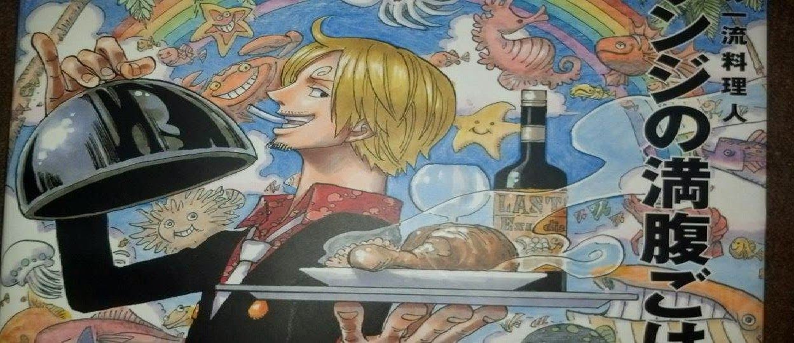

Promptly grilled salmon – Sanji edition

Serves 4
Ingredients
- 3 slices (-360g) raw salmon
- dash salt
- dash pepper
- 1/4 head (300g) cabbage
- 1/2 (100g) onion
- 1/2 (100g) carrot
- Vegetable Oil (A little:)
- 1 tbsp sake
- 1 and 1/2 tbsp sugar
- 3 tbsp miso
- 20g Butter
- 1/2 tbsp Soy Sauce
How To Cook
- Lightly salt and pepper the salmon. Roughly cut the cabbage. Cut the onion into 1 cm thick slices and the carrot into thin rectangles.
- In a heated frying pan, ad vegetable oil. Cook salmon startin with the skin side, until colored, 2-3 minutes.
- Flip fish. Add cabbage, onion, and carrot. Add sake, pouring around the pan. Add miso and sugar here and there. Add small pieces of butter on top of this miso.
- Cover with aluminium foil and steam 6-7 minutes.
- Take off the foil. Mix. Add soy sauce.